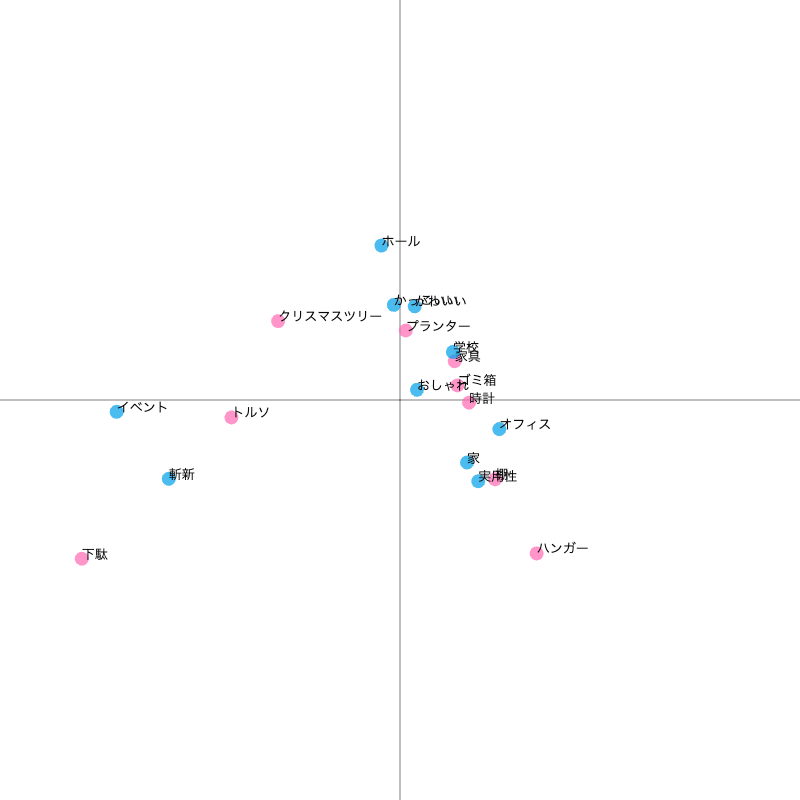

今日の取り組み
・サーキュラーデザイン、エコノミーに関する基礎知識を学ぶ
・素材の確認
・ブレインストーミング
・Fusion360の活用（大きいものを作るとき）
サーキュラーエコノミーとは
サーキュラーエコノミーとは
外部リンク
バタフライダイアグラム
外部リンク
繊維リサイクルボード
廃棄衣料品を圧縮成形した繊維リサイクルボード（
Withal）
＜使用例＞
・クリスマスツリー
・家具
・時計
・ゴミ箱
・ハンガー
・トルソー
・プランター
・下駄
など（
外部リンク）
ブレインストーミング
＜コレスポンデンス分析＞

「おしゃれ」に集中している
→「学校」や「斬新」に突き抜けたものをつくりたい
＜アイディアの発散＞
・学校（大学）にほしいものを考え、空き時間に過ごせる場所が少ないという悩みが出る
→自習・仮眠・食事スペース、
ゆっくり落ち着ける場所
・
楽器（ウクレレ）
→繊維リサイクルボードは曲げられるのか、音が響くのかが課題
次回
＜スペース班＞
・コンセプト固める
・デザイン案を考える
＜楽器班＞
・曲げられるか実験